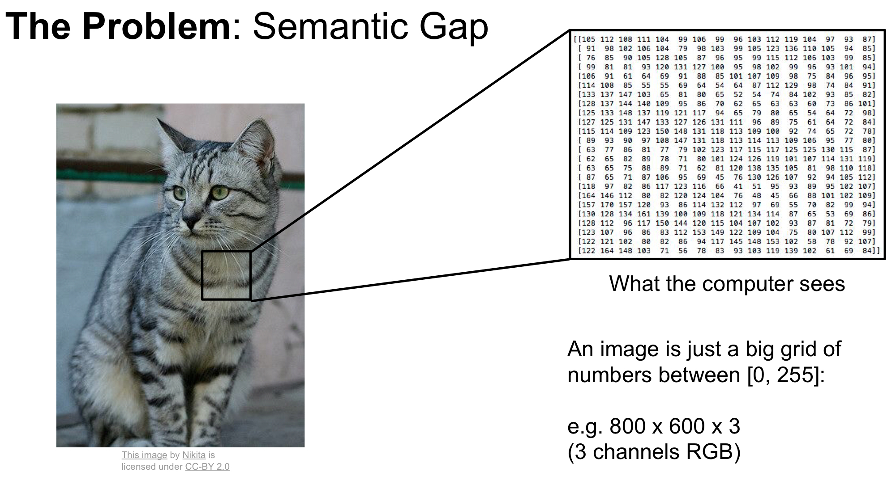

CV¶
Problems¶
- Viewpoint variation，观察角度的变化
“不识庐山真面目，只缘身在此山中”。
Scale variation，尺度变换
- Deformation，变形
猫是液体。
Occlusion，遮挡
Illumination，光线
- Background Clutter，背景干扰
如果物体和背景有很相似的颜色和纹路，那么就很难被识别。
- Intra-class variation 种间差异
同一物种可能也有差异很大的形态
Data¶
image¶
Image Classification¶
KNN¶
Question: 距离是什么
- pixel-wise 像素级别